Lecturameter 1999
Lecturameter como si lo hubieras instalado desde un CD-ROM en 1999. Un cliente alternativo de la app, con ventanas, menús y tablas, que abre tus copias de seguridad reales.
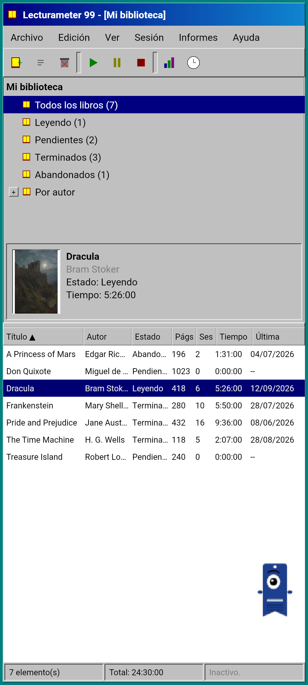
Qué es
Un programa de escritorio de finales de los noventa metido en tu móvil. Una sola ventana sobre un escritorio verde azulado, barra de menús, barra de herramientas, árbol de carpetas, tabla densa y barra de estado.
- Biblioteca en árbol: todos los libros, leyendo, pendientes, terminados, abandonados y por autor
- Tabla con título, autor, estado, páginas, sesiones, tiempo y última lectura. Toca una cabecera para ordenar
- Búsqueda de libros real, con el mismo catálogo que usa Lecturameter
- Importa y exporta la copia de seguridad de Lecturameter y el CSV de Goodreads. Tus datos entran y salen sin perder nada
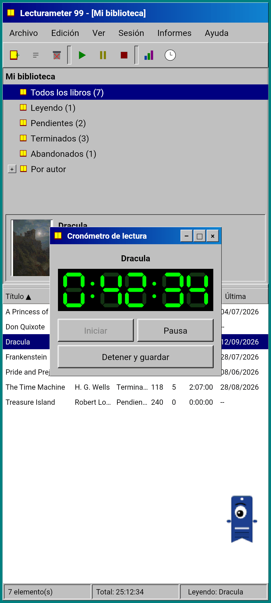
Por qué existe
Un experimento: reconstruir la idea de Lecturameter desde cero bajo premisas de diseño radicalmente distintas, sin tocar la app real. De todas las reinterpretaciones, la de 1999 fue la que más me gustó, así que la terminé como ejercicio divertido y la convertí en un cliente completo. Es más simple que Lecturameter a propósito: es un experimento y, en principio, no va a tener más desarrollo.
- Cronómetro en una ventana flotante con display LCD verde. Se mueve, se minimiza a una barra de tareas y sigue contando en la barra de estado
- Al parar, el diálogo de guardar sesión te pide las páginas y calcula el ritmo, igual que en Lecturameter
- Las sesiones guardadas son sesiones de Lecturameter: vuelven a la app moderna si exportas un backup de Lecturameter 1999 y lo importas en Lecturameter.
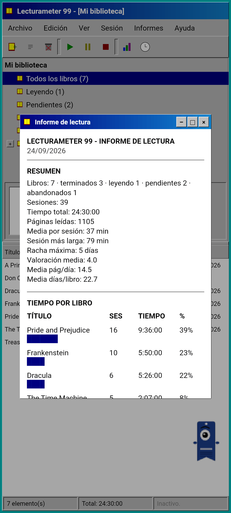
Informe de lectura
Las estadísticas son un informe impreso: resumen, tiempo por libro con barras de bloques, velocidad en páginas por día, calendario del año en caracteres y los últimos siete días.
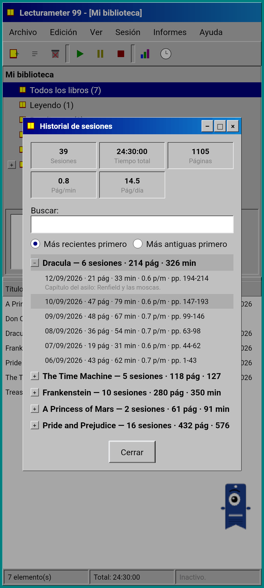
Historial de sesiones
Sesiones agrupadas por libro en un árbol con más y menos, con cinco cifras arriba: sesiones, tiempo total, páginas, páginas por minuto y páginas por día.
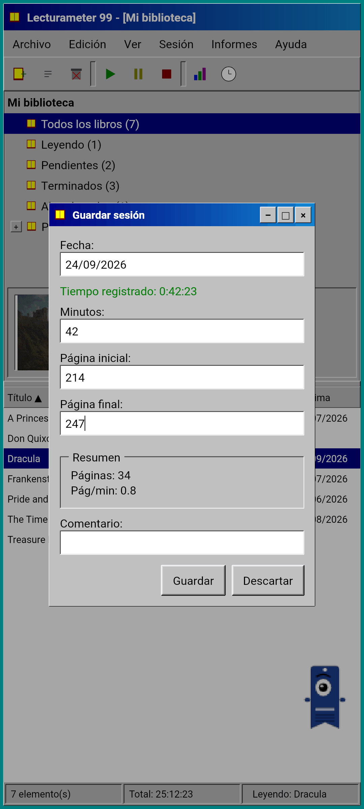
Guardar sesión
Fecha, minutos, página inicial y final, comentario. El resumen calcula páginas y ritmo mientras escribes. Si llegas a la última página, te pregunta si has terminado el libro.
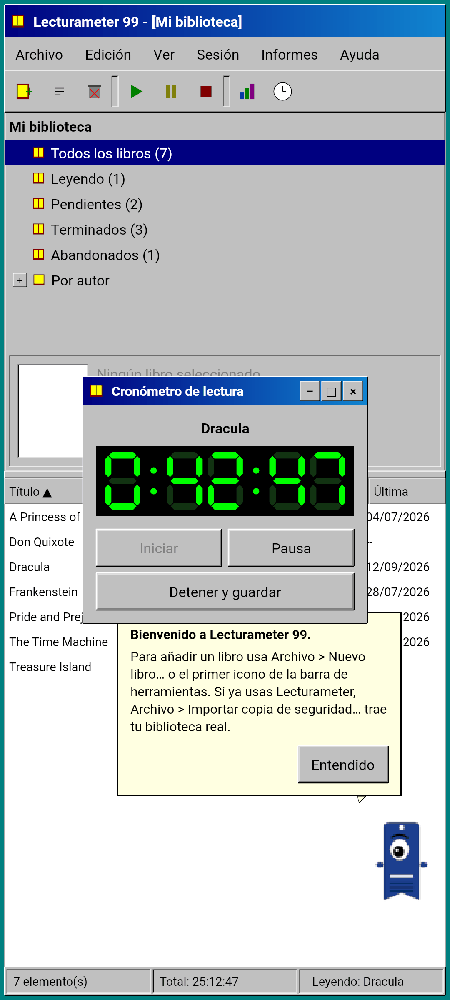
Pagi 99
Pagi también viaja a 1999: pixelado y suelto por la pantalla como los asistentes de oficina de la época. Se arrastra, suelta frases al tocarlo y enseña los consejos en globos amarillos.
Temas
Clásico 98 es gratis y viene por defecto. El pack añade seis más, cada uno con su fondo y sus sonidos.
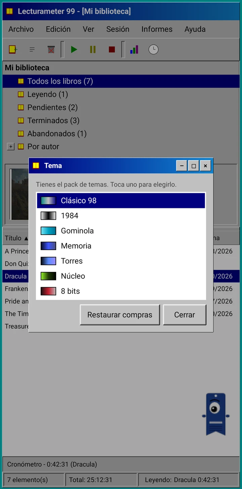
Se elige en el menú Ver
Ver, Tema... abre una ventana con los siete temas. El cambio llega al momento a todas las ventanas, al cronómetro y a Pagi.
- Clásico 98, gratis y por defecto: ventanas grises, barras de título azul marino y escritorio verde azulado
- Pack de temas: 1984, Gominola, Memoria, Torres, Núcleo y 8 bits
- Cada tema trae su fondo de escritorio y sus sonidos para los toques, las ventanas y el cronómetro
- Ver, Sonidos del tema los apaga si lees en silencio
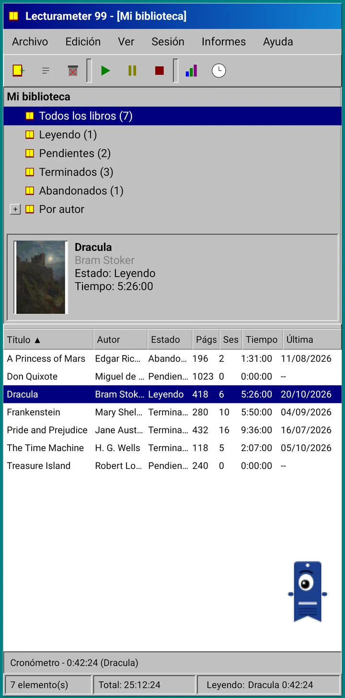
Clásico 98
Ventanas grises, barras de título azul marino y escritorio verde azulado. Gratis, es con el que se abre la app.
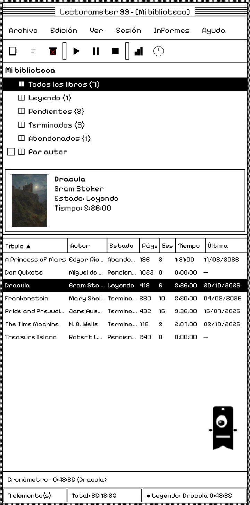
1984
Escritorio en blanco y negro de un bit, con tramas de puntos y ventanas cuadradas.
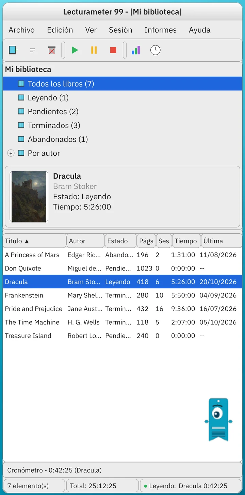
Gominola
Plástico translúcido de colores, botones redondeados y rayas de fondo.
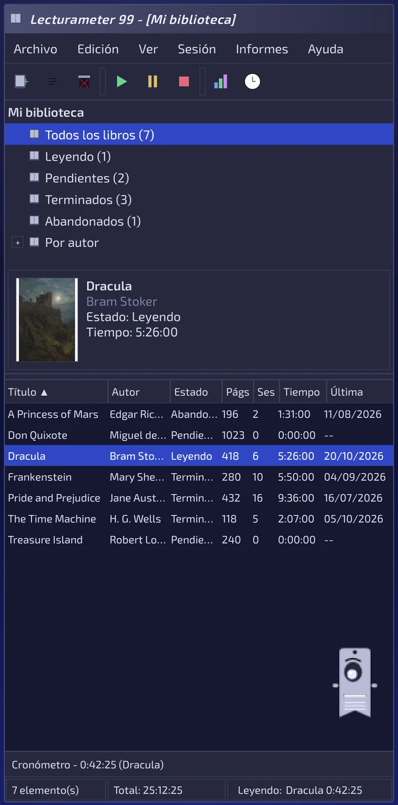
Memoria
Los menús de una consola de discos de los 90, en azules oscuros.
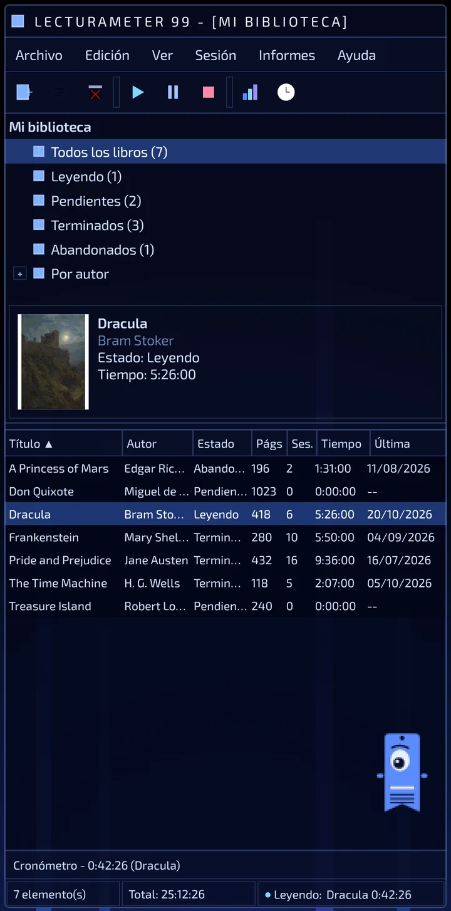
Torres
Otra consola de discos de los 90, azul noche con líneas azul claro.
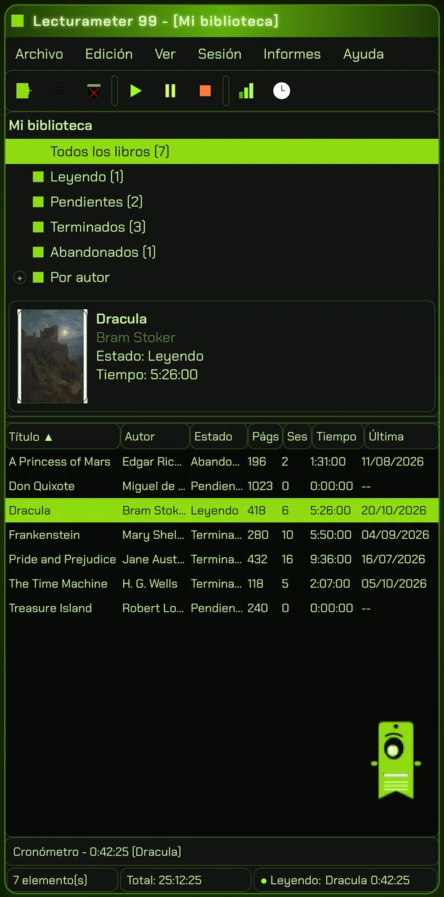
Núcleo
Consola negra y verde, como una pantalla que no se apaga nunca.
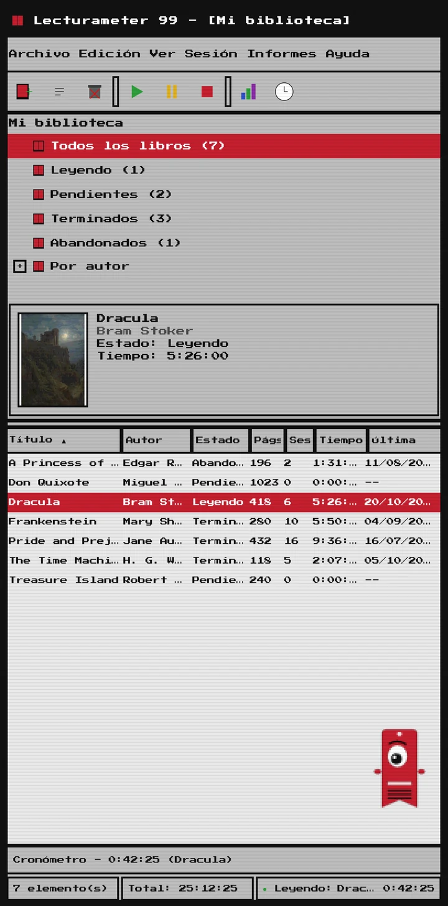
8 bits
Píxeles gordos, pocos colores y letras de bloque.
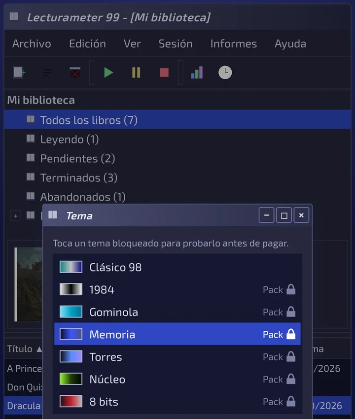
Pruébalo antes de pagar
Tocas un tema bloqueado y toda la app se cambia a ese tema. Si cierras sin comprar, vuelve el que tenías.
Salvapantallas
Solo salen con el cronómetro en marcha y sin tocar el móvil. Esperan 1, 3 o 5 minutos, o nunca. Un toque y vuelves, el cronómetro sigue contando.
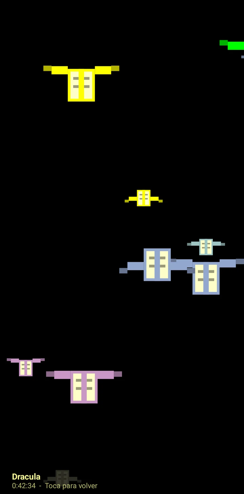
Libros voladores
Libros de píxeles que vuelan batiendo las tapas sobre fondo negro.
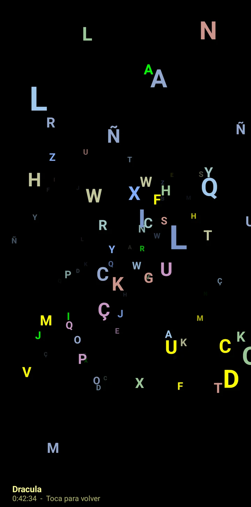
Campo de letras
Letras de muchos alfabetos que pasan despacio, como un campo de estrellas.
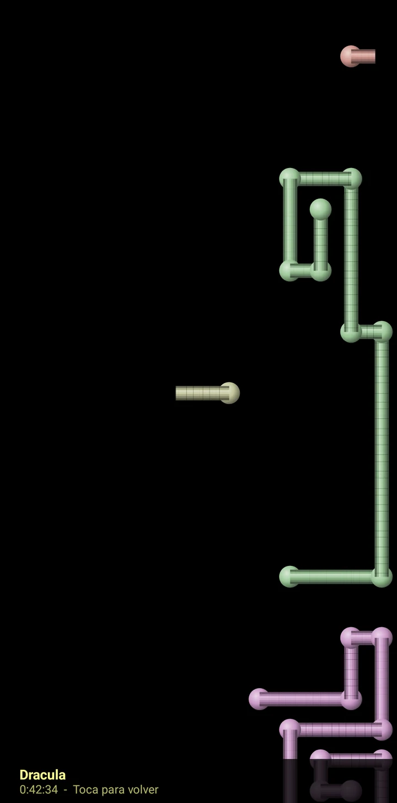
Tuberías de páginas
Tuberías hechas de páginas que se dibujan solas hasta llenar la pantalla.
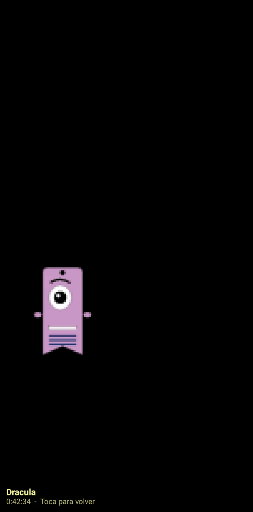
Pagi rebota
Pagi rebotando contra los bordes de la pantalla.
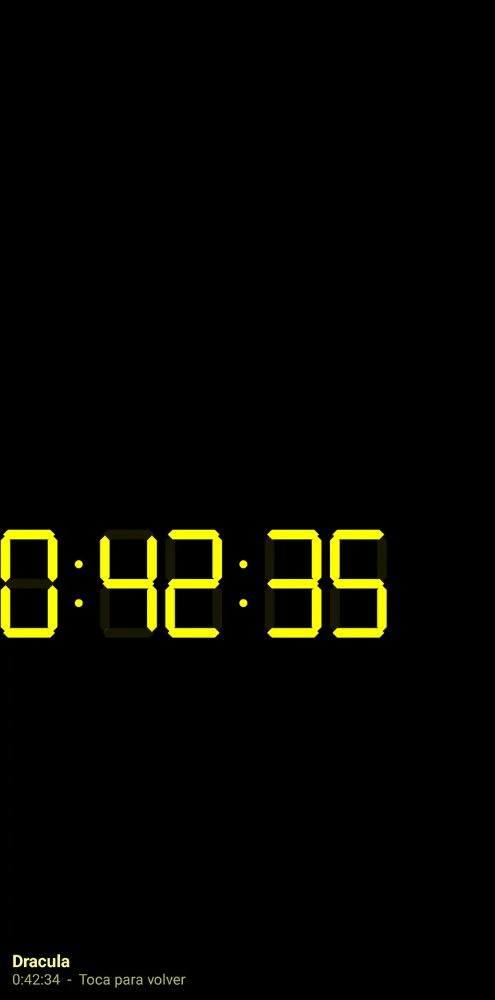
Reloj de lectura
El tiempo de la sesión en números LCD grandes.
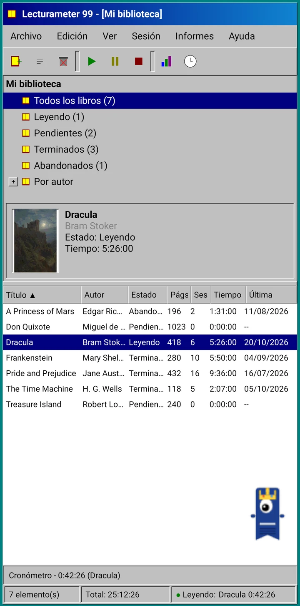
Disfraces de Pagi
Ocho disfraces para Pagi 99. Se eligen en Ver, Disfraz de Pagi..., y te los puedes probar antes de pagar.
- Reproductor de cinta
- Gorra hacia atrás
- Gafas 3D
- Gafas de sol neón
- Disquete en mano
- Chupa de cuero
- Mascota de bolsillo
- Corona de cartón
Tienda
La app es gratis y completa para registrar tus lecturas. Lo que se compra solo cambia cómo se ve.
La app entera, sin límite de tiempo.
- Biblioteca, búsqueda, cronómetro y sesiones
- Informe de lectura e historial de sesiones
- Copia de Lecturameter y CSV de Goodreads, de ida y vuelta
- Tema Clásico 98 y Pagi 99
- Sin cuenta y sin anuncios
Pagos únicos, sin suscripciones.
- Pack de temas, 3,49 €: 6 temas con fondo y sonidos, y los salvapantallas
- Salvapantallas, 1,99 €: los 5 salvapantallas
- Disfraces de Pagi, 1,99 €: los 8 disfraces
- Todo el 1999, 4,49 €: temas, salvapantallas y disfraces
Propinas opcionales en el menú Ayuda, si quieres invitarme a un café.
Los temas y los disfraces se prueban en vivo antes de pagar. Si cierras sin comprar, vuelve lo que tenías.
Qué cambia respecto a Lecturameter
Igual que Lecturameter
- Mismos datos: libros, sesiones, estados, valoraciones y notas. La copia de seguridad es la misma en las dos apps.
- Búsqueda de libros por título o autor.
- Cronómetro real: sigue contando en segundo plano y aunque cierres la app.
- Sin cuenta, sin anuncios, sin conexión salvo para buscar libros.
- Los mismos idiomas que Lecturameter.
Solo en el 1999
- Interfaz de escritorio de 1999. Nada de Material.
- Ventanas de verdad: se arrastran, se minimizan y se cierran con la equis.
- Informe de lectura en texto, con calendario en caracteres.
- Menú contextual al mantener pulsado y atajos de teclado si conectas uno.
- Pagi 99 pixelado con globos de consejos.
- Temas opcionales con su fondo y sus sonidos, salvapantallas mientras corre el cronómetro y disfraces para Pagi.
Lo que no tiene, a propósito
- Sin Pro y sin suscripción. Registrar tus lecturas es todo gratis, la tienda solo vende aspecto.
- Sin retos, bingos, resumen anual ni widgets.
- Sin sesión inmersiva, sonidos ambiente ni copia en Google Drive. La copia se guarda como archivo.
Prueba cerrada
Lecturameter 1999 está en prueba cerrada en Google Play. iOS llegará después, todavía sin fecha.
- Únete al grupo groups.google.com/g/lecturameter-1999
- Apúntate como tester en play.google.com/apps/testing/com.lecturameter.r1999
- Instálala desde Google Play
En prueba cerrada en Google Play, iOS después. Lee la entrada del blog para ver de dónde sale y qué puedes esperar.